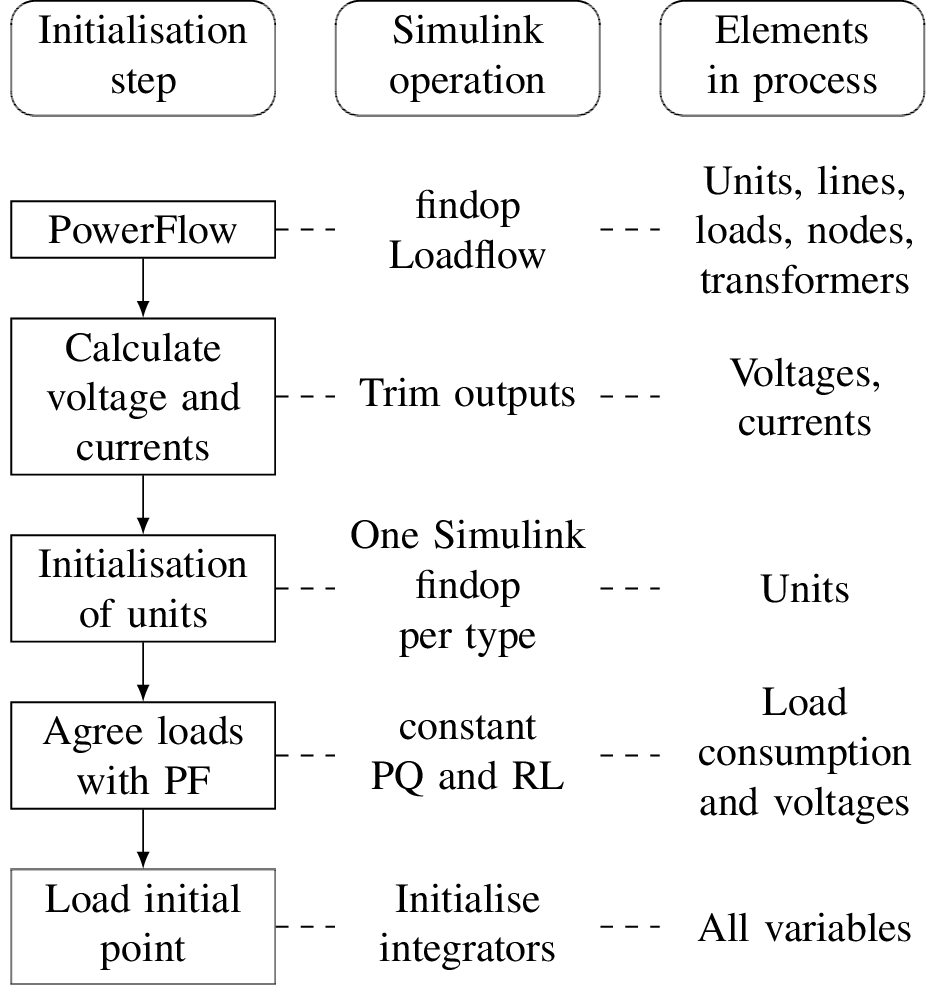

AC/DC Power Flow Analysis
Static analysis in VFlexP establishes the steady-state operating point used to initialise all dynamic models and inspect network loading. Figure 1 illustrates the complete two-stage initialisation pipeline.

1. MATPOWER-FUBM Formulation
Clicking Run PF in the Static Analysis tab of the VFlexP App (or calling vflexp_run_pf(session) in MATLAB) solves the hybrid AC/DC power flow using the MATPOWER-FUBM Flexible Universal Branch Model extension. Symbolic $name expressions in the tables are evaluated first, and converter conduction and switching losses (ALPHA1, ALPHA2, ALPHA3) are solved consistently across every AC/DC interface converter.
Generator buses operate as PV, PQ, or Slack according to Bus data.type (if an AC synchronous area has no Slack bus declared, VFlexP automatically promotes its first in-service generator bus to Slack). Solved voltage magnitudes Vm, angles Va, active/reactive generation Pg/Qg, and branch/converter flows are written back into the session tables and visualised interactively in the System Diagram tab.
2. Consistency with Dynamic Network Loads
To guarantee zero transient mismatch at \( t = 0 \) between the steady-state power flow and the dynamic Simulink model, impedance/RL load parameters (\( R_{\text{load}}, L_{\text{load}} \)) and DC load conductances/currents are computed directly from the solved terminal voltages so that every load consumes the exact active and reactive power determined by the power-flow solution.